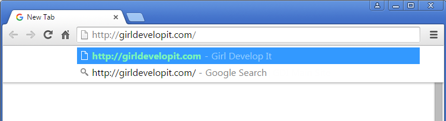
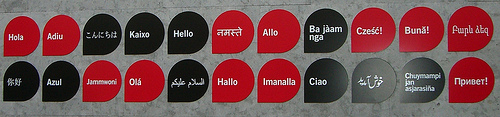
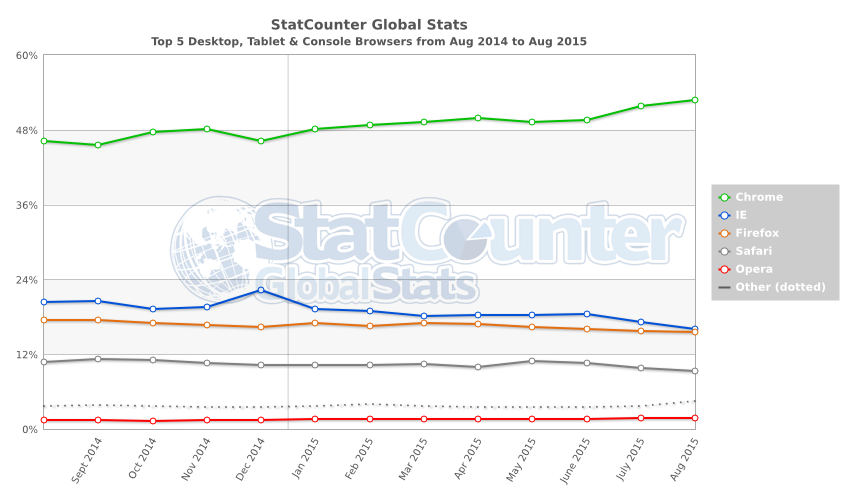
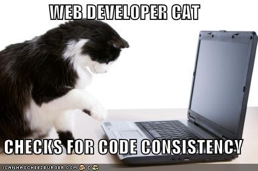

Introduction to Web Concepts
orWhat is that Web Developer talking about?
Welcome!
Girl Develop It is here to provide affordable and accessible programs to learn software through mentorship and hands-on instruction.
Some "rules"
- We are here for you!
- Every question is important
- Help each other
- Have fun
- Code of Conduct
Intros
Tell us about yourself!
#1 - Name, where you're from, why you're here.
#2 - Your favorite TV nerd.
What we'll cover
- Terms & technologies
- Building a web site
- Web development professionals
What to expect
- This is a survey of a very broad topic
- Get a sense of what you'd like to know more about
- I don't know everything, and neither will you
- Have fun! (and ask questions)
Terms & Technologies
Terms
HTML: Hyper Text Markup Language - The code structure used to convey the content of a web site
CSS: Cascading Style Sheets - A language used to describe the presentation of the content
WYSIWYG: What You See Is What You Get - A type of editing software meant to be used by those who don't know how to code
Terms
IDE: Integrated Development Environment - Software meant to support the entire development process, often including compilation for a server-side language
CMS: Content Management System - A program that allows publishing, editing, and modifying content as well as maintenance from a central interface
Open source: A program in which the source code is available to the general public for use and/or modification from its original design
API: Application Programming Interface - An easy-to-use interface or set of tools made available to access a complex application
IP Address: Internet Protocol Address - A unique address for a computer or a server. Some IP Addresses are only unique to the network they are on while others are completely unique
DNS: Domain Name Service - A directory that associates domain names with host IPs to allow users to connect to web sites via URLs
SEO: Search Engine Optimization - The process of increasing your web site's perceived value to search engine algorithms, raising its rank in search results
Web 2.0: Buzzword generally describing a trend towards interactivity, rich media, and social engagement in web design
The Cloud: Services and technology that offer remote storage, processing, or other functionality by way of the internet
What is the world wide web?

How does the web work?
Let's take a tour! A typical web site will live or is "hosted" on a web server. Web servers are often large computers connected to a network.

Photo credit computerroom085 cc
Step 1: Type an address into the address bar
Step 2: Your computer performs a DNS lookup
Each website has a unique code, called an IP address, that is like a phone number.
DNS, or Domain Name Servers, are like phone books. The DNS servers will connect you to the right server.
girldevelopit.com → 205.178.189.129
Step 3: The server reponds to your request
The server processes your request and finds the right files. Sometimes it has to "compile" a page from code and other sources, like a database.
Step 4: The server sends your computer the files
This is usually an HTML page, with some CSS, JavaScript, or media files.
Step 5: Your browser displays the page
Your browser interprets the code and assembles all the files into a page you can see and use. Each browser does this slightly differently.
Clients vs. Servers
- Clients make requests, servers fulfill them (usually).
- Browsers are clients. There are other types as well.
- Any computer can be a server.
- Most servers are powerful, specialized computers.
Let's Try It!
The simpliest type of request you can send is a "ping." It asks the server "are you there?"
- Open the command line (Windows) or the terminal (Mac)
- Type "ping google.com" and see what happens
- Try some different websites
What about 'The Cloud'?
- Cloud Computing means that data can be stored across a number of machines in different locations instead of just one locally.
- Cloud applications need internet access in order to work.
Browsers
Parsing languages
Client-side:
- HTML
- CSS
- SASS
- JavaScript
Server-side:
- PHP
- Perl
- Python
- Ruby
- .Net
- Java
- ColdFusion
- Databases
- Also Javascript. (It's complicated)
Not languages
- Libraries, like jQuery & Mootools, are collections of programming shortcuts for a language
- Frameworks, like Rails and Angular, a collection of assets/tools that helps you work in a particular language
- Content Management Systems, like WordPress, are tools that build webpages
- A specification, like the HTML spec, is a set of currently acceptable rules for a given language
Not languages
- AJAX, Asynchronous JavaScript And XML, a technique for combining multiple languages to return results from the server without needing to refresh a page.
- REST, Representational State Transfer, a protocol for building web applications.
Java != JavaScript
Java:
- Server-side
- Object-oriented
- Requires special parser (JVM)
- By Sun Microsystems
JavaScript:
- Primarily client-side
- Primarily written procedurally
- Parsed by any browser
- By Netscape
Web standards
We all need to play by the same rules!
In general, this means a site should:
- Have valid HTML, CSS, and JavaScript, so browsers know how to read the page
- Meet accessibility standards, so people with disabilities can use a site
- Have valid metadata, information about the page, so search engines and other tools can index it
- Have proper character encoding, so special characters don't break the page.
Building a web site
Considerations before building
- What is the purpose of the site?
- Hosting and a domain name
- Domain name registration should not cost more than $15/yr
- Hosting a simple personal website should not cost more than $50/yr
- Hosting choices may depend on supported server-side tech
- Whether to build it yourself or hire someone
User Experience & Information Architecture
A user-friendly, well-architected site will:
- Deepen engagement
- Increase conversion
- Raise satisfaction
- Bring users back
Sitemaps & decision trees


WYSIWYG vs. hand-coding
- WYSIWYG code editors make general assumptions about what you intended to write which often is not accurate or best
- They make the job of professionals much more difficult when the code is written poorly and filled with junk
- To truly understand what you are building, you need to learn the fundamental components
- Once you know how to code by hand, there are no limits to what you can build!
What languages to use
That depends...
- You'll definitely use HTML and CSS
- You may use JavaScript to make things interactive
- If you want to store or retrieve data, you'll need a server-side language
Demo: How'd they do that?
A List ApartSquarespace
Burger King
Let's Try It!
Let's edit a simple HTML page.
- Go to our CodePen
- Try changing some of the text on the page in the HTML
- Try changing one of the colors in the CSS
Server-side languages: What are the differences?
- The main difference is syntax, the set of rules for how you write a language.
- They have slightly different strengths and philosophies
- Which you choose to use will depend on
- What you are familiar with or want to learn
- What your host supports
- Community and documentation
Hello world
PHP
echo "Hello, world!";
Java
class HelloWorld {
static public void main( String args[] ) {
System.out.println( "Hello World!" );
}
}
Hello world
Python
'Hello, world!'
Ruby
puts 'Hello, world!'
Hello world
JavaScript
Not server-side, but just for example
document.writeln('Hello, World!');
Tools of the trade
To build your web site, you will probably need:
- A text editor like SublimeText, Notepad, or TextWrangler to write your code. Many can be found for free.
- A web browser like Chrome, Firefox, or Safari to test your code. All popular modern browsers are free.
Tools of the trade
You will also need:
- An FTP (file transfer protocol) client such as WinSCP, Cyberduck, or CoffeeCup FTP to get files from your computer to the server. Many are free.
- Optionally, an image editor such as IrfanView, Gimp, or Photoshop to edit images which will be used on the web site. Some are available for free.
Web development professionals
Meet the web team
- Front end
- User Experience Designer
- Graphic Designer
- Web Developer
- Back end
- Server Admin
- Database Admin
- Software Engineer
- Overall
- QA Engineer
- Project Manager
How to hire a developer
Remember the three Rs:
- References: Talk to people who have worked with the developer before. Were they prompt? Pleasant? Forthright?
- Requirements: Can they do the work that needs to be done. Ask for samples of their prior work and ask exactly which parts of the process they were responsible for. Design? UX? DB architecture? QA?
- Reality: If it sounds too good to be true, it probably is. This website will be a reflection of you, either personally or professionally. Hire someone you feel will be invested in a job well done.
How to be hired as a developer
- Degrees and certifications: they don't hurt
- Be curious, a problem solver, and intrepid
- Build things. For yourself, if no one will pay you
- Through all of this, learn your craft and how things work
Questions?
More information
Girl Develop It BTV co-leaders:
Rachael Arnold and Maureen McElaney.
- Join our Meetup group
- National website
- Email burlington@girldevelopit.com
- Twitter @gdiburlington